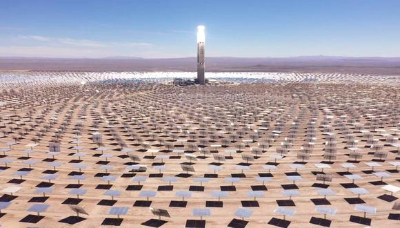

Las diferentes tecnologías solares se pueden clasificar en pasivas o activas según como capturan, convierten y distribuyen la energía solar. Las tecnologías activas incluyen el uso de paneles fotovoltaicos y colectores solares térmicos para recolectar la energía. Entre las técnicas pasivas, se encuentran diferentes técnicas enmarcadas en la arquitectura bioclimática: la orientación de los edificios al Sol, la selección de materiales con una masa térmica favorable o que tengan propiedades para la dispersión de luz, así como el diseño de espacios mediante ventilación natural.
En 2011, la Agencia Internacional de la Energía afirmó que «El desarrollo de tecnologías solares limpias, baratas e inagotables supondrá un enorme beneficio a largo plazo. Aumentará la seguridad energética de los países mediante el uso de una fuente de energía local, inagotable y, aún más importante, independientemente de importaciones, aumentará la sostenibilidad, reducirá la contaminación, disminuirá los costes de la mitigación del cambio climático, y evitará la subida excesiva de los precios de los combustibles fósiles. Estas ventajas son globales. De esta manera, los costes para su incentivo y desarrollo deben ser considerados inversiones; deben ser realizadas de forma correcta y ampliamente difundidas».
La fuente de energía solar más desarrollada en la actualidad es la energía solar fotovoltaica. Según informes de la organización ecologista Greenpeace, la energía solar fotovoltaica podría suministrar electricidad a dos tercios de la población mundial en 2030.
Gracias a los avances tecnológicos, la sofisticación y la economía de escala, el coste de la energía solar fotovoltaica se ha reducido de forma constante desde que se fabricaron las primeras células solares comerciales, aumentando a su vez la eficiencia, y su coste medio de generación eléctrica ya es competitivo con las energías no renovables en un creciente número de regiones geográficas, alcanzando la paridad de red. Otras tecnologías solares, como la energía solar termoeléctrica está reduciendo sus costes, también de forma considerable.

COMO SE OBTIENE LA ENERGIA SOLAR
El sol es el encargado de calentar la tierra por medio de la radiación solar, la cual viaja desde el sol a través del espacio mediante unas partículas llamadas fotones. Estas partículas funcionan como vehículos transportadores de la energía solar. Antes de centrarnos en explicarte cómo se obtiene la energía solar, debes saber que la cantidad de energía solar que recibe la tierra anualmente es 4.500 veces mayor que la energía que esta consume, de ahí que continuamente se comente que es ilimitada e inagotable.
La energía solar se obtiene de las radiaciones solares que llegan a la tierra en forma de luz, calor o rayos ultravioletas y que capturan las placas solares. Esta energía es limpia y renovable. Su fuente es el sol, por ello podemos considerarla un recurso ilimitado. Hoy en día, es una de las fuentes de energía más prometedoras que hay, junto a la energía eólica, y poco a poco va desbancando a las centrales de combustible fósil y a las energías nucleares.
TECNOLOGÍAS DE LA ENERGÍA SOLAR
- Energía solar activa: para uso de baja temperatura (entre 35 °C y 60 °C), se utiliza en casas; de media temperatura, alcanza los 300 °C; y de alta temperatura, llega a alcanzar los 2000 °C. Esta última, se consigue al incidir los rayos solares en espejos, que van dirigidos a un reflector que lleva a los rayos a un punto concreto. También puede ser por centrales de torre y por espejos parabólicos.
- Energía solar pasiva: Aprovecha el calor del sol sin necesidad de mecanismos o sistemas mecánicos.
- Energía solar térmica: Es usada para producir agua caliente de baja temperatura para uso sanitario y calefacción.
- Energía solar fotovoltaica: Es usada para producir electricidad mediante placas de semiconductores que se alteran con la radiación solar.
- Energía termosolar de concentración: Es usada para producir electricidad con un ciclo termodinámico convencional a partir de un fluido calentado a alta temperatura (aceite térmico).
- Energía solar híbrida: Combina la energía solar con otra energía. Según la energía con la que se combine es una hibridación, puede ser renovable o no renovable.
- Energía eólico solar: Funciona con el aire calentado por el sol, que sube por una chimenea donde están los generadores.